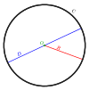

radius

Definition: In classical geometry, a radius (PL: radii) of a circle or sphere is any of the line segments from its center to its perimeter, and in more modern usage, it is also their length. The name comes from the latin radius, meaning ray but also the spoke of a chariot wheel. The plural of radius can be either radii (from the Latin plural) or the conventional English plural radiuses. The typical abbreviation and mathematical variable name for radius is R or r. By extension, the diameter D is defined as twice the radius:
Source: Wikipedia
Wikipedia Page
Wikidata Page